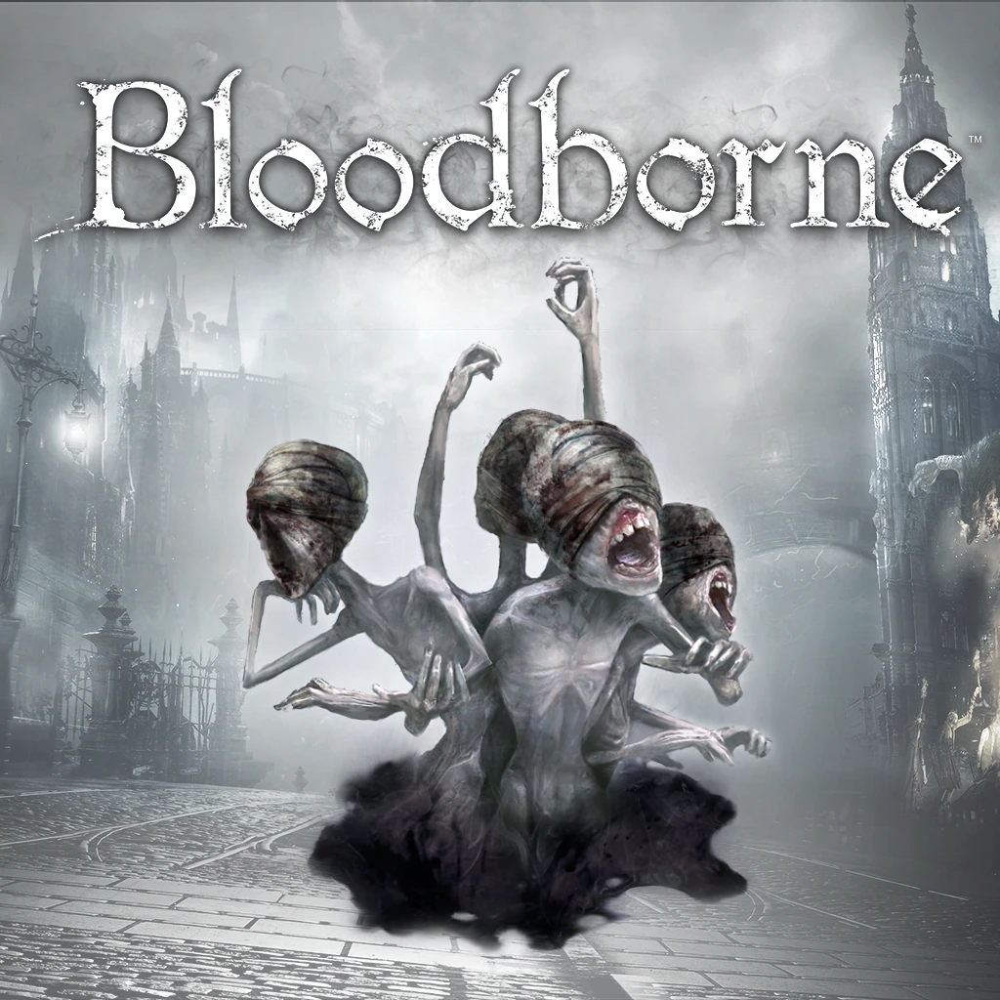
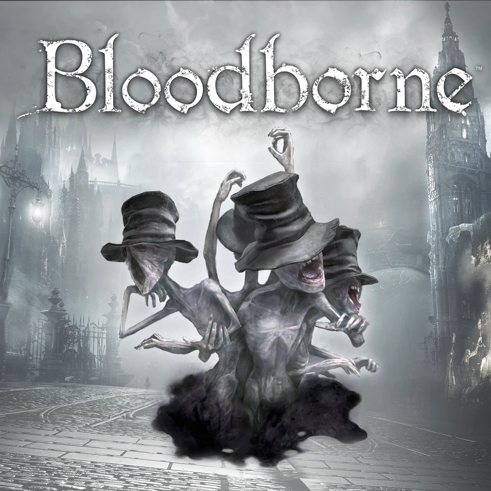
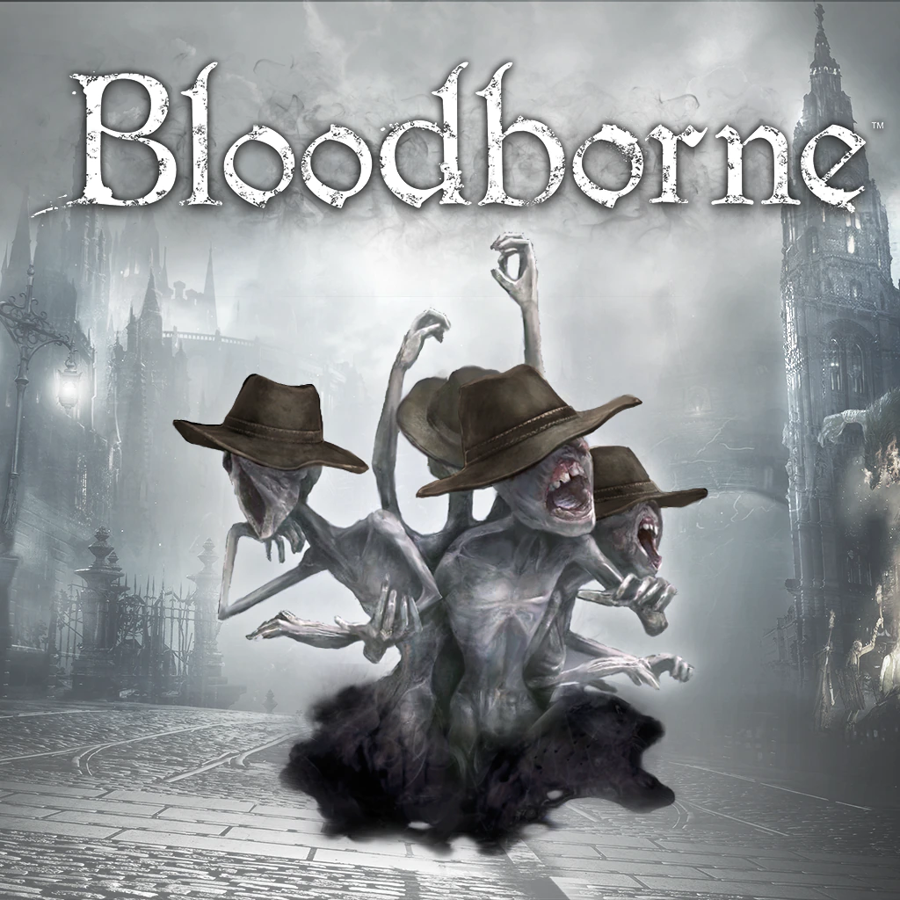
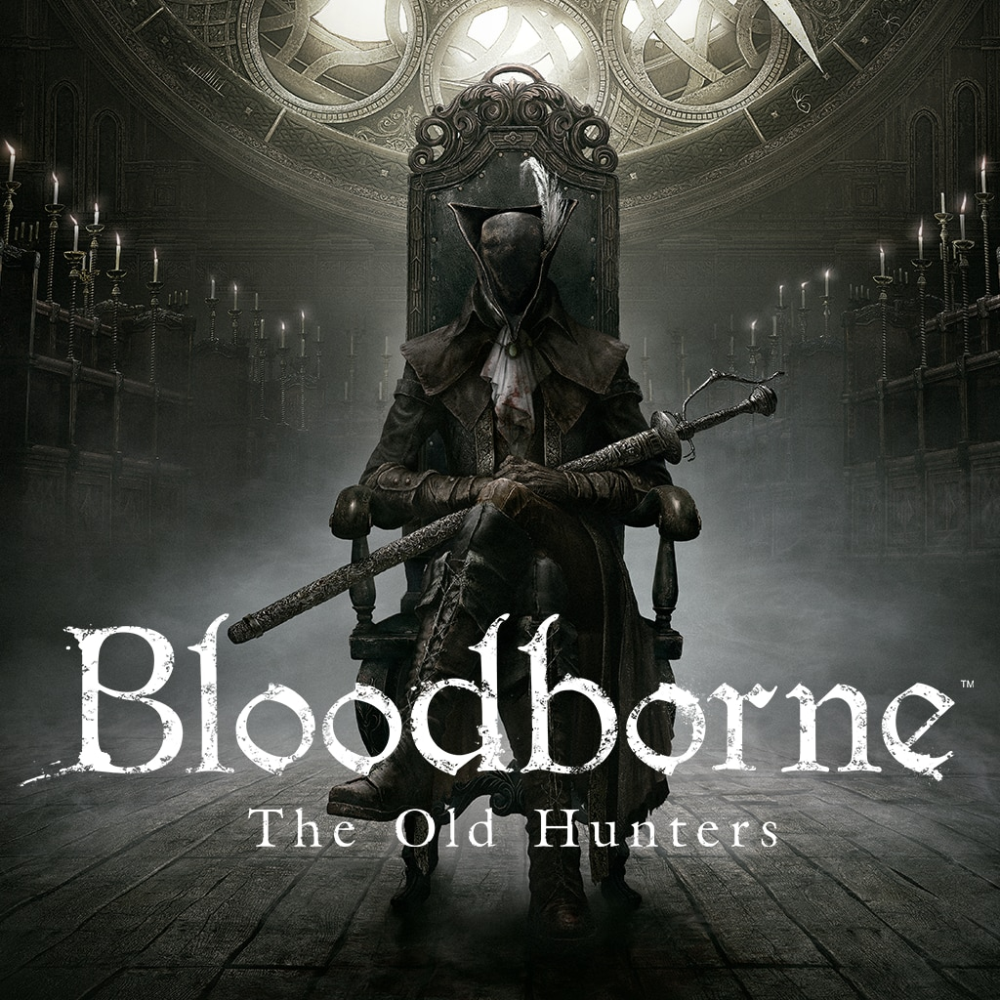

Messenger Head Bandage DLC
Acessório adorado por mensagei-
ros ingênuos que imitam as ataduras das vítimas do flagelo, sem saber seu significado.
Os mensageiros são criaturas dos pesadelos que
guardam suas mensagens para outros jogadores, e protegem sua tumba quando você morre para que outros
jogadores possam ver os momentos finais da sua vida.
Esta pele exclusiva permite que seus mensageiros
pessoais façam chapéus com estilo aonde quer que forem.

Messenger Top Hat DLC
Uma cartola gasta e amarrotada que os mensageiros estranhamente gostam.
Os mensageiros são criaturas dos pesadelos que
guardam suas mensagens para outros jogadores, e protegem sua tumba quando você morre para que outros
jogadores possam ver os momentos finais da sua vida.
Esta pele exclusiva permite que seus mensageiros
pessoais façam chapéus com estilo aonde quer que forem.

Messenger Yharnam Hat DLC
Comumente chamado de Chapéu de Yharnam.
Os mensageiros são criaturas dos pesadelos que
guardam suas mensagens para outros jogadores, e protegem sua tumba quando você morre para que outros
jogadores possam ver os momentos finais da sua vida.
Esta pele exclusiva permite que seus mensageiros
pessoais façam chapéus com estilo aonde quer que forem.

The Old Hunters
Conheça o pesadelo dos caçadores que um dia protegeram os segredos mais obscuros e profundos de
Byrgenwerth e desvende o mistério por trás do passado aterrador de Yharnam no conteúdo descarregável da
expansão The Old Hunters de Bloodborne™.
Viaje a um mundo em que caçadores do passado estão presos
para sempre, encontre várias roupas e armas inéditas para acrescentar ao seu arsenal e explore novas fases
repletas de perigos, recompensas e monstros letais para caçar.